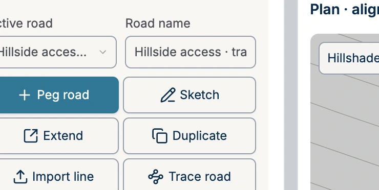
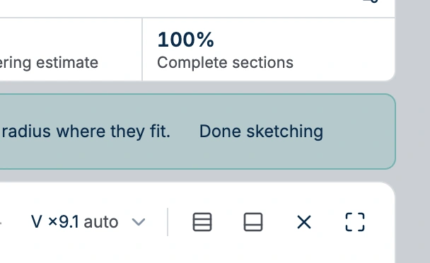
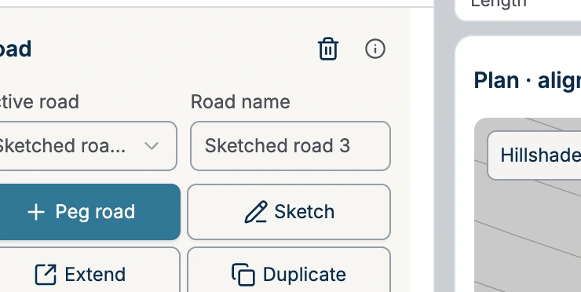

Sketch a road
Start in the Engineering workbench with the Hillside access training project. The lesson opens on a road-free patch of the training hillside. The two existing alignments are elsewhere in the project.
1. Pick up the sketch tool
In the Design tab, select Sketch. The sketching instructions above the plan tell you when the tool is active.

2. Choose a starting point
Start near the lower-left of the open hillside shown here. Press and hold on the contours to begin a new road. A stroke that touches its end can extend the existing road.
3. Drag the route in one stroke
Drag from lower left to upper right across the contours in one gentle S-curve, then release. DDC Access turns the stroke into editable points and fits curves where the minimum radius allows.
4. Leave sketch mode
Select Done sketching to inspect the result. To extend it first, draw another stroke that meets the end of the active road.

5. Check the new road
In Design, check Road name. This example creates Sketched road 3. The number depends on how many roads were already in the project.
